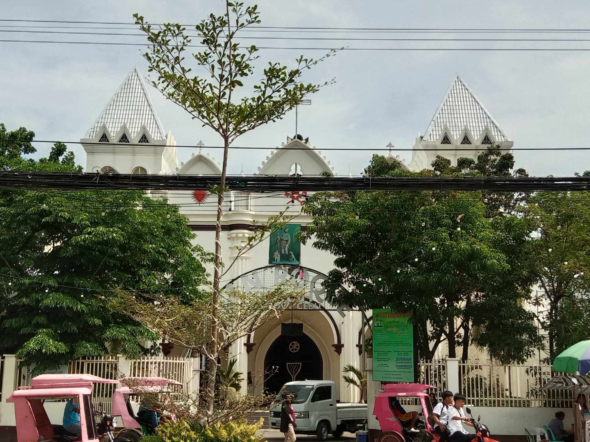

San Roque Church
San Roque Church
San Roque Church in Cordova, Cebu What is known today as Cordova was the result of unifying areas of Gabi, Day-as and Pilipog collectively as a jurisdiction separate from Opon., Its name was derived from Cordoba, a Moorish city in Spain. In 1898, however, it was annexed to Opon due to unsuccessful attempt in running the new town independently. A decade after, it called for a secession that was granted by the Philippine Assembly. Bernardo Nuñez, whose name is memorialized in a street named after him, was selected as municipal president in an inaugural meeting attended by Speaker Sergio Osmeña, Sr., Governor Manuel Roa, and officials from Opon. In the past, San Roque Church’s mother parish is the church in Opon (currently, Lapulapu City). It gained parochial status on October 8, 1864. The Order of Augustinian Recollects administered the parish in the beginning, starting with Fr. Jose Salazar, OAR as the first parish priest. In 1909, its administration passed to the Redemptorists and to the Missionaries of the Sacred Heart since 1939. An early house of worship was constructed from tabique pampango, nipa, and coral stones that was constructed in 1864. The construction of the stone church began during the term of Fr. Lucas Incon, a secular priest, who served between 1924 and 1933. Architecture Renovations done throughout the history of the Cordova Church made much of it contemporary in style. It combines architecturally Moorish and Gothic elements. Its facade is designed as porte-cochere. It has four Corinthian columns that are fluted and topped with peaks made of minor fluted pier and bulbous spire, dividing the facade as well as the pediments into three sections and where the middle section is wider than the other two. On the ground floor is an arcade made of three contiguous arches. Above the arches are clover-shaped windows bearing cherub-like figures. Each of the three pediments is a pointed arch whose outline is embellished with acanthus leaves. On each pediment is a relief of a particular icon: the center has the coat of arms of the Holy See, the gospel side the Sacred Heart of Jesus, and the epistle side the Immaculate Heart of Mary. The entrance and twin bell-towers flanking San Roque Church are recessed. The entrance is composed of three pointed arched doors, the primary portal being wider and flanked by narrower twin entrance doors.
Comments